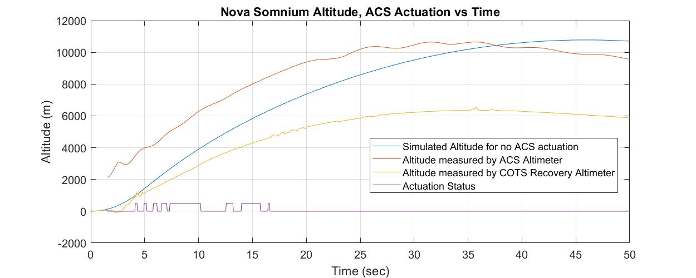

Integrating Runtime Verification into a
Sounding Rocket Control System
Benjamin Hertz, Zachary Luppen, Kristin Y. Rozier
This webpage contains research artifacts from "Integrating Runtime Verification into a
Sounding Rocket Control System" by B. Hertz, Z. Luppen, and K. Y. Rozier
The full dataset can be found here: DATA.csv
Launch Video
This video shows the launch of Nova Somnium. About 4 seconds into flight, the rocket abruptly veers due to premature aerobraking control system (ACS) actuation. ACS deployed while the solid rocket motor was still burning, creating severe stress and ultimately causing a material failure in the mechanical braking system. The mechanical failure led to asymmetrical air brake pad actuation, creating the large moment that sent the rocket veering horizontally.
Explanation of Failure
The ACS made an incorrect decision to deploy while the motor was still burning. Although the system was designed to only actuate after burnout was completed, a review of the flight data showed that the system incorrectly determined that the rocket motor had already burnt out. The failure led to two undesirable results. First, the rocket was unable to reach its target altitude. Second, the rocket was travelling much faster at apogee than expected, causing the parachute recovery system to shred and subsequently destroying the rocket upon high-speed impact.
The exact details of what happened in the few seconds before catastrophe are uncertain, but we believe that the system power momentarily flickered when the motor first ignited, causing a restart. The system was designed with a 10 time-step startup phase for sensor calibration before assuming initially that the system is on the ground. The rocket was accelerating during the sensor calibration, so the data used for state-characterization and actuation was non-sensical, leading to the issues observed during the launch.
Altitude and Actuation Graph
This graph highlights the disparity between the altitude the ACS measured versus the COTS recovery altimeter's measurement. The COTS recovery altimeter is only used to trigger parachute deployment. It is an entirely separate system from the ACS and experienced no flight anomalies, so its data is considered accurate.
